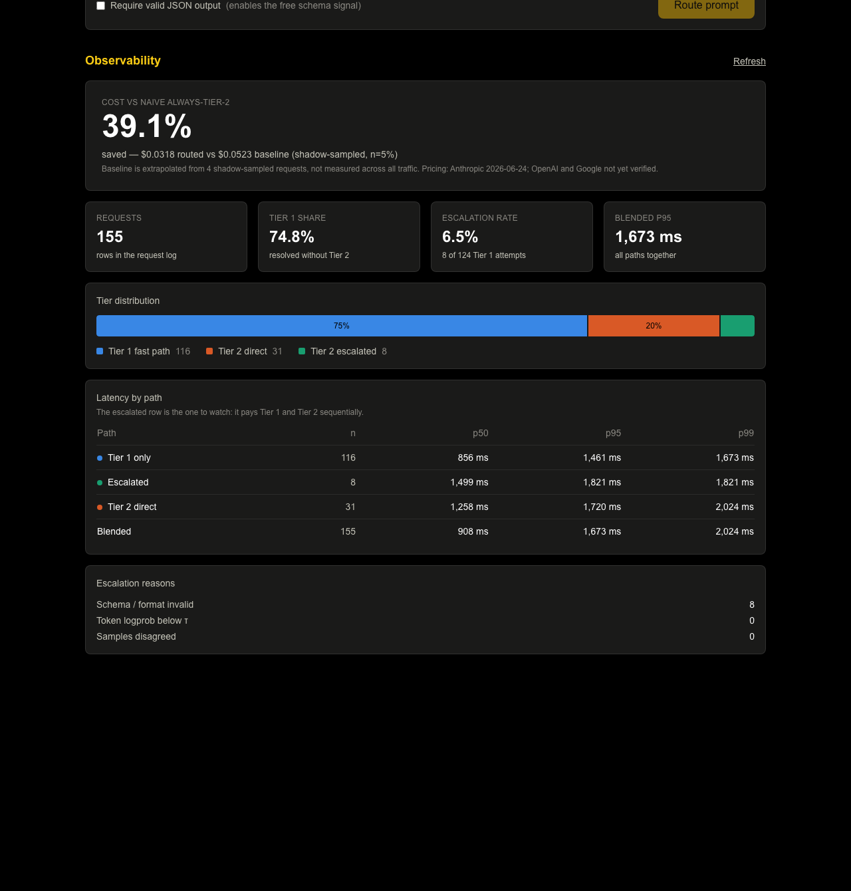

A two-tier, cost- and latency-aware inference router, built with Claude Code and verified against live API traffic.
| Author | Ghasan Jaber |
| Submitted for | AI Specialist Engineer — DriveNets |
| Built with | Claude Code (Opus 5), Next.js 15, TypeScript, Vitest |
| Providers | OpenAI (router tiers + comparison), Google Gemini, Anthropic (comparison) |
| Repository | github.com/Ghasanjaber/LLM-Evaluation-Platform |
| Document date | 13 October 2026 |
Every quantitative claim carries a provenance label. The distinction is the point of the document, not decoration:
Measured observed in a live run against a real provider
Estimated extrapolated from a small sample
Mocked verified by tests that never contact a provider
Unverified designed and reasoned, not demonstrated
Answer quality has never been evaluated. The router's central premise — that a cheap model is good enough for prompts classified "simple" — has no eval behind it. Every cost and latency figure in this document is real; none of them say the answers were correct.
The platform's original design queried every configured model for every prompt. Cost scales as O(models × prompts), and most of that spend goes to the most expensive model even when the prompt does not need its capability.
The obvious fix — call the cheap model first, ask how confident it is, escalate if unsure — fails twice:
| Goal | Route most prompts to a low-cost model without materially degrading quality. |
| Goal | Never make an LLM call whose only purpose is deciding whether to make another LLM call. |
| Goal | Escalate on objective, externally observable signals — not self-rating. |
| Goal | Report savings against a measured baseline, not a token-count estimate. |
| Non-goal | Guaranteeing the cheap tier never underperforms. The router reduces that rate; it does not eliminate it. |
| Non-goal | Replacing side-by-side comparison mode. The router is a separate, opt-in path. |
Two decision stages run before any model is called — deterministic regex heuristics, then a local logistic-regression classifier over a hashed text embedding. Neither touches the network. A prompt that was always going to need the large model goes there directly, which keeps the double-latency path a minority of traffic rather than the default.
| Result | Value | Status |
|---|---|---|
| Routed spend over 155 live requests | $0.0318 | Measured |
| Naive always-Tier-2 baseline | $0.0523 | Estimated |
| Cost saving | ≈ 40% | Estimated |
| Fast-path share, distinct 60-prompt corpus | 52% | Measured |
| Escalation rate (8 of 124 Tier 1 attempts) | 6.5% | Measured |
| Fast-path latency p50 / p95 | 856 / 1461 ms | Measured |
| Escalated-path latency p50 / p95 | 1499 / 1821 ms | Measured |
| Blended latency p50 / p95 | 908 / 1673 ms | Measured |
| Stage 2 classification time (warm) | 0.07 ms | Measured |
| Automated tests (10 files, offline) | 136 passing | Mocked |
The saving is an estimate. The baseline is extrapolated from four shadow-sampled requests across 116 fast-path requests. The direction is sound; the precision is not. Read it as "roughly 40%", never 39.1%, and not as a statistically robust or universally applicable figure.
The fast-path share is 52%, not 74.8%. The dashboard shows 74.8% because the 155 logged requests include three deliberate repeat passes over the 30 simple prompts, run to make 5% shadow sampling fire at all. Over the distinct 60-prompt corpus it is 52% — the figure used throughout this document.
Two independent paths over one shared provider layer. The router is opt-in and does not replace comparison mode.
No LLM call is ever made whose only purpose is deciding whether to make another LLM call. Both pre-query stages are local, so routing adds no network tax to any request. A router that called a model to classify complexity would reintroduce the exact cost and latency problem it exists to solve.
| Signal | Applies when | Marginal cost |
|---|---|---|
| Schema / format validation | Output shape is declared | free |
| Token logprob below τ | Provider exposes logprobs | free — same response |
| Self-consistency | Logprobs unavailable | +1 Tier 1 call |
Checked cheapest-first. The paid signal runs only when the free ones cannot decide — a property that is invisible in output and is therefore asserted directly by a test (§5).
| Concern | File |
|---|---|
| Orchestration, shadow sampling, schema repair | src/lib/cascade/router.ts |
| Stage 1 heuristics | src/lib/cascade/heuristics.ts |
| Stage 2 classifier and embedder | classifier.ts, embedding.ts |
| Escalation gate | src/lib/cascade/escalation.ts |
| Provider adapters, bounded retry | src/lib/providers.ts |
| Metrics — four observability views | src/lib/cascade/metrics.ts |
| Request log and its schema | logger.ts, types.ts |
| Tunables, pricing, tier selection | src/lib/cascade/config.ts |
These are verbatim extracts from the Claude Code session transcript for this project (22 prompts, 16 Sept – 13 Oct 2026). Trims are marked […]; nothing is paraphrased. Claude Code wrote most of the implementation; I set the constraints, rejected output that did not survive checking, and verified every claim against artifacts before accepting it.
| Decision | Alternative rejected | Why |
|---|---|---|
| Objective escalation signals | Ask the model to self-report confidence | Small models are confidently wrong; an uncalibrated self-rating is not a usable signal. |
| Local classifier for Stage 2 | An LLM call to classify complexity | Reintroduces the cost and latency problem being solved. |
| Free heuristics before the classifier | Classifier-only routing | Zero-cost filter catches the clearest cases before spending anything. |
| 5% shadow sampling | Estimate the baseline from token counts | An estimate is not a measurement. A savings number needs comparative data behind it. |
| Tiers chosen by probing the key | Trusting /v1/models | The org-level list overstates what a project-scoped key can call (§4). |
The problem was framed by supplying a complete 13,370-character architecture specification — problem statement, goals and non-goals, two-stage classification, the escalation signals, benchmarking strategy, metrics, design decisions, open questions and a log schema. The reasoning quoted in §1 and §2 of this document originates there, not from the model. Claude Code's job was to implement it and to report honestly where implementation and specification diverged — it now lists eleven such points.
Result. A working router: Stage 1 heuristics, Stage 2 classifier, three-signal gate, request logger, metrics dashboard. All offline checks passed.
Three findings, none visible offline. (a) gpt-4
is listed by /v1/models but returns 404 to project-scoped keys —
29 of 60 calls failed. (b) No retry existed for 429, and a 3 requests/minute
cap silently lost 4 of 60 prompts. (c) All 8 escalations were schema failures,
and the expensive model did not fix them (§4).
Retry-After when provided. / Preserve useful error
reporting and ensure failed requests are accounted for accurately. / Keep
the implementation consistent with the existing architecture."Result. 109 → 136 tests. The new suite immediately caught a defect in the retry code itself (§5). Tests, typecheck, lint and build all pass.
"Work incrementally. Inspect before editing. Preserve the existing design and working features. Do not rewrite the whole application, change model providers unnecessarily, or run the full live corpus without asking me first." — 13 Oct, 10:08, quoted in full.
.data/requests.jsonl, not copied from an earlier summary.
/router dashboard over the 155 logged requests.
Note the savings figure carries its shadow-sampled, n=5% label
inline, and that "Token logprob below τ" reads 0. The 74.8% tile is the
repeat-pass artefact described in §1 — the distinct-corpus share is 52%.Observation. Across 155 live requests, all 8 escalations
were schema_fail. Not one was triggered by the logprob gate.
The request log stores no logprob values, so this was established
indirectly. Logprobs were requested and returned: Tier 1 is an
OpenAI model, wantLogprobs is set for it, and a direct probe
confirmed gpt-4o-mini returns them. Decisively, had they been
absent the gate would have fallen through to self-consistency on every
fast-path request — doubling the Tier 1 calls. It did not:
0 of 116 fast-path rows show doubled token counts (median
tokens_in = 15, max 25), and there are 0
inconsistent escalations. So the values were present, read, and
simply never fell below τ = −1.0. The threshold is uncalibrated for
this model and workload, not broken. It has been left unchanged
pending calibration against real logprob distributions.
Probe. Asked for a two-letter ISO country code under the
schema ^[A-Z]{2}$, Tier 1 returned prose. The request escalated to
gpt-4o, which returned:
The ISO 3166-1 alpha-2 code for Norway is "NO".
Also prose. Also a schema violation. The router had paid the expensive tier to reproduce the same failure.
A formatting miss is not a capability gap. The design had assumed one remedy — escalate — for all three signals, and that assumption was wrong for the signal that turned out to fire most. A larger model is the right answer to "this model isn't smart enough" and the wrong answer to "this model didn't follow the output contract".
| Tripped signal | Remedy now | Rationale |
|---|---|---|
logprob_low | Escalate to Tier 2 | Low confidence is a capability gap. |
inconsistent | Escalate to Tier 2 | Sample disagreement likewise suggests the task exceeds the tier. |
schema_fail | One bounded constrained retry at Tier 1, then escalate if still failing | Addresses the actual cause on the tier whose list price is 16.7× lower (gpt-4o : gpt-4o-mini list ratio, not a measured per-request saving). |
The repair restates the constraint as a system instruction, runs at
temperature 0, and sets response_format: json_object where the
model supports it. It is bounded by SCHEMA_REPAIR_ATTEMPTS
(default 1) so a model that cannot satisfy a schema cannot drive unbounded
spend. The outcome is recorded in a new schema_repaired log field.
Its control flow is covered by mocked tests. Its live success rate
is unmeasured. Whether a real model obeys the repair instruction
often enough to beat escalating is reasoned, not demonstrated. The field
exists precisely so that becomes measurable — and
schema_repaired appears in 0 of the 155 logged
rows, because that data predates the change.
gpt-4 appears in GET /v1/models for this account
yet returns 404 — does not exist or you do not have access to a
project-scoped (sk-proj-…) key whose allowlist excludes it. The
org-level list overstates what a given key can call. Tiers were then selected
by probing the key directly: gpt-4o-mini → gpt-4o, a
16.7× spread with logprobs available on both.
The account is capped at 3 requests/minute on gpt-4o; the
raw-fetch adapters had no retry at all, so 4 of 60 prompts simply
failed. They now retry with bounded backoff: at most 3 attempts,
Retry-After honoured as delta-seconds or HTTP date, otherwise
exponential backoff with jitter, both capped at 30 s.
Only explicit 429 and 5xx responses are
retried; network errors and timeouts are not. A timed-out request may have
been received and billed, so repeating it risks a duplicate charge and a
duplicate completion. A 429 is an outright rejection, so a
repeat is safe. A 5xx usually means the work was not done, but
that is not guaranteed — which is why the 3-attempt bound matters: it caps
the duplicate-charge exposure rather than eliminating it.
136 tests, 10 files, roughly 250 ms, entirely offline.
API keys are blanked in vitest.config.mts, so a test that reaches
a provider is a failing test.
| File | Tests | Layer | What it covers |
|---|---|---|---|
heuristics | 21 | Unit | Every Stage 1 rule in both directions — over-matching forfeits savings, under-matching sends hard prompts to the weak tier. |
embedding | 10 | Unit | Determinism, L2 normalisation, zero-vector on empty input, stable embedder id (the trained weights are bound to it). |
classifier | 8 | Unit | Sigmoid overflow bounds, monotonicity, cold-start reporting, provenance. |
escalation | 20 | Unit + behavioural | Each signal, plus signal ordering — asserted with a spy that fails if the paid resample is reached. |
pricing | 7 | Unit | Cost arithmetic, linearity, and the invariant that Tier 1 is strictly cheaper than Tier 2. |
metrics | 21 | Unit | Percentile edges and honesty properties: no baseline without a sample, null not zero on an empty log, negative savings surfaced not hidden. |
retry | 14 | Unit | Retry-After as seconds and as HTTP date, caps, jitter, bounded worst case. |
router | 14 | Integration | Decision → correct model called; every caused call billed; one log row per path; field set checked against the design document. |
repair | 13 | Integration | Full repair flow: success avoids Tier 2, failure escalates, boundedness, and the three cases where repair must not fire. |
routing.golden | 8 | Golden output | Aggregate routing across all 60 corpus prompts pinned to {31, 15, 14}; known-misroute tracking; Stage 2 latency budget. |
Each layer exists because the one below it cannot see a particular class of defect:
The golden test holds a KNOWN_MISROUTES map of five prompts
the classifier routes against intent, with a diagnosed cause: every complex
training example opens with an imperative verb, so the model learned
"imperative ⇒ complex" and trips on Return, List, Fix.
Holdout accuracy of 86.7% did not surface this; running the corpus did. The
map is deliberately not a relabelling — the test fails on a new
misroute and also when one is fixed.
| Gate | Real defect |
|---|---|
| Running the app | Duplicate provider map made claude-opus-5 unreachable from one endpoint while the router handled it. Typecheck and build both passed. |
| Live API run | Three defects invisible offline: gpt-4 listed but 404 for project-scoped keys (29 of 60 calls failed); no 429 retry (4 of 60 lost); escalation does not repair schema failures (§4). |
npm test | A negative Retry-After fell through to Date.parse("-5"), which succeeds as a past date, yielding a 0 ms delay — a hot-retry loop. |
npm test | A test asserted p50 of [100,120] was 120; nearest-rank makes it 100. The test was wrong, the code was right. |
tsc | A type error in a test file that passed at runtime — Vitest does not typecheck. |
next lint | An unused parameter introduced by the fix for that. |
Ordered by how much each would matter in production.
| Not covered | Risk accepted | Status |
|---|---|---|
| Answer quality at either tier | The router's core premise has no eval behind it. Nothing verifies that the cheap tier is good enough, or that escalating yields a better answer. The largest accepted risk in the project. | Unverified |
| Schema repair on live traffic | Control flow is covered by mocked tests; the real hit rate is unknown, so "cheaper than escalating" is reasoned, not demonstrated. | Unverified |
| Retry policy against a live 429 | Unit-tested only. Reproducing a real rate limit means deliberately burning quota, so the policy has not been re-validated end to end since the failure that motivated it. | Unverified |
| Provider adapters against real APIs | No recorded fixtures. A provider changing its response shape breaks parsing and no test catches it; mitigated only by the adapters being thin and failing loudly. | Unverified |
| Anthropic adapter end to end | Never exercised with a live key. Its retry comes from the official SDK rather than the shared helper, so the two providers have different retry semantics — deliberate, but not uniform and not tested. | Unverified |
| Concurrency and load | Single-request paths only. The retry jitter's purpose — desynchronising concurrent callers — is therefore unproven. | Unverified |
| The request log stores no model outputs | Only routing, tokens, cost and latency are recorded. Cost and latency are therefore auditable after the fact; answer quality is not. A retrospective quality spot-check over the 155 logged requests is impossible without re-running them and paying again — a direct consequence of the schema choice, and the first thing to change. | Unverified |
| React pages | Exercised by hand against the running app; no component tests. | Unverified |
| Request log on a serverless filesystem | Append-only JSONL assumes a persistent disk. A serverless deployment needs a real datastore; the read/write pair is the only surface that would change. | Unverified |
| Pricing accuracy | Anthropic rates came from a published table; OpenAI and Google rates are hand-entered and unchecked. Tests confirm the arithmetic, never the inputs — every dollar figure inherits this caveat. | Unverified |
| Classifier beyond the corpus | 86.7% holdout on 149 examples, below the 200–500 the design targets, with 100% train accuracy indicating overfitting. Five misroutes tracked. | Measured |
| Next step | Why it comes first |
|---|---|
| 1. Build a quality eval | Every cost claim is currently unanchored. A router that saves 40% while degrading answers is a worse product, and nothing in the project would currently detect that. This is the gap that most limits what the measured results mean. |
| 2. Measure the repair hit rate | The field exists and logs nothing yet. A few hundred live requests would turn "reasoned" into "measured" and settle whether repair genuinely beats escalation. |
| 3. Raise shadow samples into double figures | Four samples cannot support a precise savings figure. More volume — or a temporarily raised sample rate for a deliberate measurement run — would narrow the uncertainty. |
| 4. Expand and rebalance the training set | 149 examples with every complex case opening on an imperative produced a diagnosable bias. Targeted counter-examples should remove the five known misroutes. |
| 5. Log model outputs | Without them no quality claim can ever be checked retrospectively, and step 1 cannot be done on existing traffic. Cheap to add; unblocks everything about quality. |
| 6. Calibrate τ against real logprob distributions | The gate has never fired, so the threshold is currently decorative. |
| 7. Verify the pricing table | Cheap to do, and every dollar figure depends on it. |
| 8. Recorded fixtures for provider adapters | Would catch a provider changing response shape without needing live keys in CI. |
| 9. Replace the JSONL log for deployment | Required before any serverless deployment; the interface is already narrow enough to swap. |
github.com/Ghasanjaber/LLM-Evaluation-Platform
The remote contains the router, the corpus, the design document and the dashboard. The work described in §4 and §5 — the test suite, the schema-repair path, the retry policy and the submission documentation — was complete and verified locally but not yet committed or pushed when this document was generated. Confirm the push before submitting, or the reviewer will not see the test suite.
git clone https://github.com/Ghasanjaber/LLM-Evaluation-Platform.git cd LLM-Evaluation-Platform npm install npm run train:classifier # fits the Stage 2 classifier from the seed set npm test # 136 tests, ~250 ms, fully offline npm run corpus # routing over 60 prompts; prints the 5 tracked misroutes
cp .env.example .env.local # add OPENAI_API_KEY npm run dev # terminal 1 npm run corpus -- --live # terminal 2 — about $0.03, ~5 min at 3 RPM
Then at http://localhost:3000/router:
| Prompt | Expected path |
|---|---|
| What is the capital of Norway? | Tier 1 fast path |
| Write a function that reverses a list | Stage 1 → Tier 2; Tier 1 never called |
Give the ISO code for Norway (regex ^[A-Z]{2}$) | Schema failure → constrained repair → repaired or escalated |
Requires Node 18+ (developed on Node 24). OPENAI_API_KEY is the
only key the router needs; both tiers are OpenAI models.
This document ships with a real screenshot of the running dashboard over genuine logged data (§4) and fully reproducible commands above. A recorded walkthrough was not produced in time and is not claimed.
| Document | Contents |
|---|---|
docs/architecture/cascade-router.md | The design document. §5 carries the remedy-by-signal amendment; §11 lists eleven points where the implementation diverges from the spec, each with its reason. |
docs/SUBMISSION.md | Architecture summary, test inventory, limitations, demo steps. |
README.md | Setup, measured results with provenance, testing strategy, and the "not tested, and why" table. |